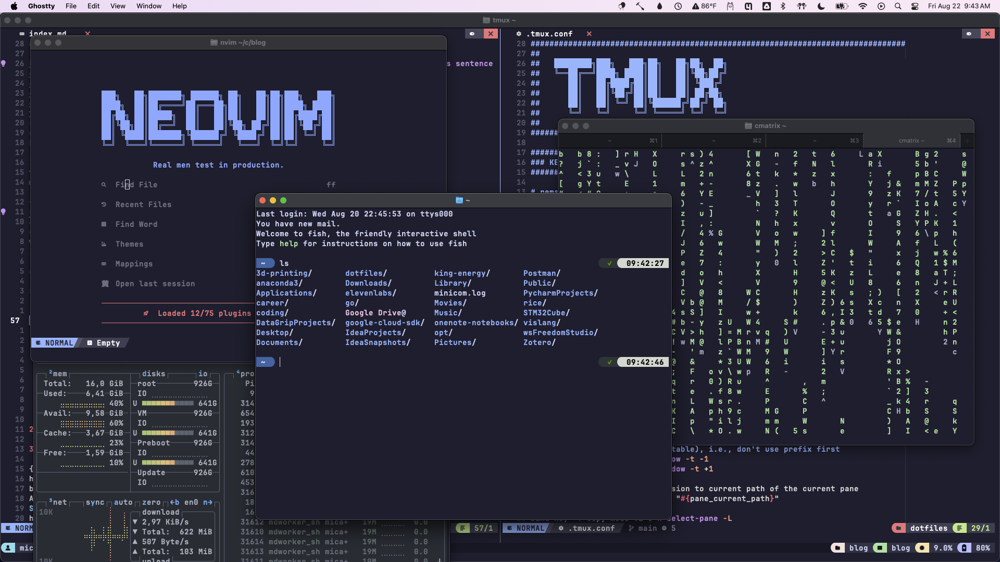
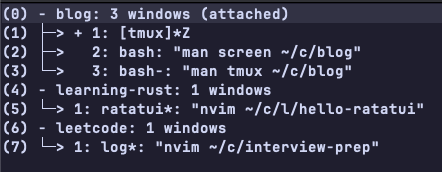
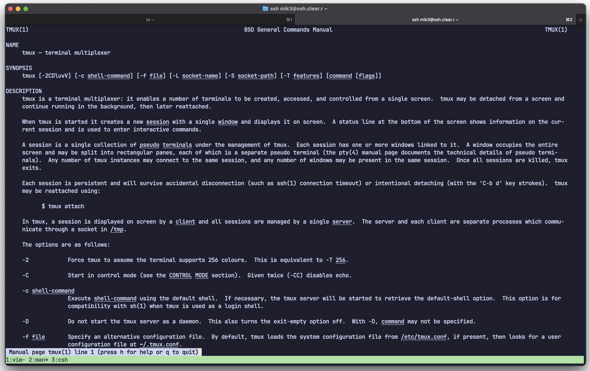
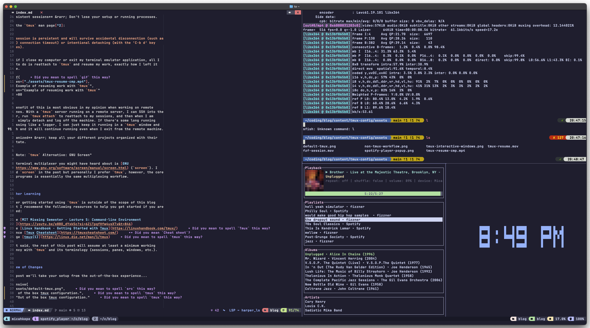
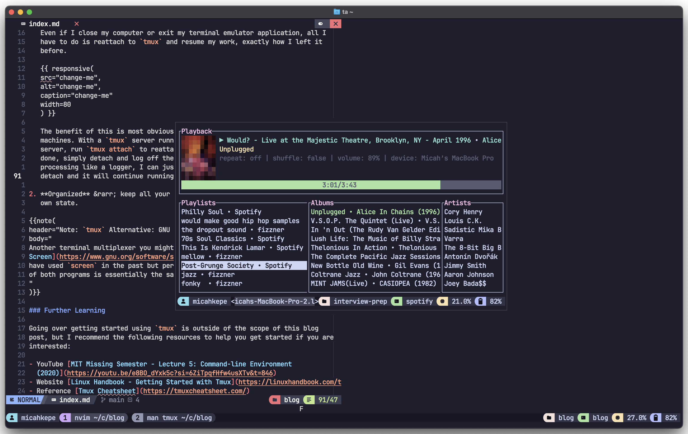
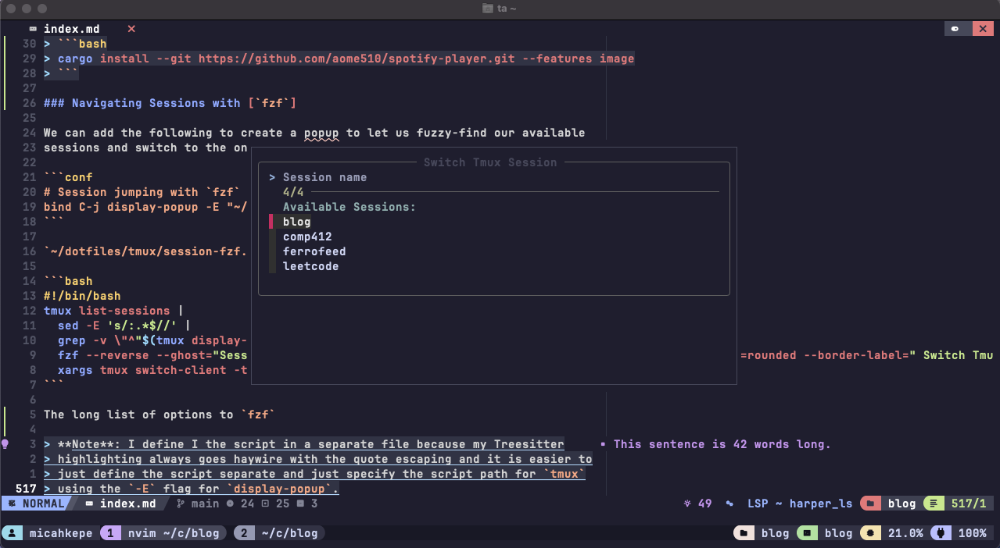
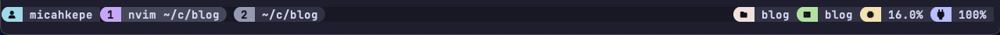

tmux is a beast of a tool that I found to be indispensable for my personal
developer workflow, but there are a few things that I have added to my tmux
configuration to enhance the out-of-the-box experience.
Table of Contents
Context: What is tmux and Why Should I Use It?
NOTE: feel free to skip ahead if you are familiar with
tmux
tmux is a terminal multiplexer
— essentially a way to manage the state of multiple terminal sessions in a
single application (your terminal emulator).
An Example
For example, let's say you are working on a project and you want to have a few
processes going: (1) a code editor like Vim for editing the source files, (2) a
separate shell for running git commands, (3-) and an arbitrary amount of other
jobs for opening up documentation/ checking system resources/ etc.
Without a terminal multiplexer, you could open a lot of tabs in your emulator and just navigate between them, which might work fine if you just need to quickly work on something and not go back to it. But what if you need to switch to another project? Do you close all of your tabs now, or open an entirely new terminal window? What if you have many projects you are switching between? This quickly grows unwieldy and disorganized.

Yikes
Instead, with a multiplexer, you can simply create a new session in tmux that
can have an arbitrary amount of windows ("tabs"), which themselves can have
multiple panes ("splits"/ views, such as vertical splits).

Interactive window switching in tmux
Benefits
Some of my favorite aspects of a terminal multiplexer workflow are:
-
Persistent sessions → Don't lose your setup or running processes.
From the
tmuxman page1:Each session is persistent and will survive accidental disconnection (such as ssh(1) connection timeout) or intentional detaching (with the ‘C-b d’ key strokes).So, even if I close my computer or exit my terminal emulator application, all I have to do is reattach to
tmuxand resume my work, exactly how I left it before.Example of resuming work with `tmux`
The benefit of this is most obvious in my opinion when working on remote machines. With a
tmuxserver running on a remote server, I can SSH into the server, runtmux attachto reattach to my sessions, and then simply detach when I am done and log off the machine. If there's some long running processing like a logger, I can just keep it running in atmuxwindow and detach and it will continue running even when I exit from the remote machine. -
Organized → keep all your different projects organized with their own state and labeled with their respective directories or custom names.
Another terminal multiplexer you might have heard about is GNU
Screen (screen). I
have used screen in the past but personally I prefer tmux, however, the core
of both programs is essentially the same multiplexing workflow.
Further Learning
Going over getting started using tmux is outside of the scope of this blog
post, but I recommend the following resources to help you get started if you are
interested:
- YouTube MIT Missing Semester - Lecture 5: Command-line Environment (2020)
- Website Linux Handbook - Getting Started with Tmux
- Reference Tmux Cheatsheet
- Man Page tmux(1)
With that said, the rest of this post will assume at least a minimum working
proficiency with tmux and its terminology (sessions, panes, windows, etc.).
Preview of Changes
In this post we'll take your setup from the out-of-the-box experience...

Out-of-the-box tmux configuration.
to this:

End product tmux setup from this post.
We'll also change some of the stock options and keys to make using tmux more
ergonomic (IMHO). Feel free to jump around with the Table of Contents to any
sections that interest you!
Note: All
tmuxconfiguration snippets will live in~/.tmux.confunless otherwise noted.
Key Bindings
Just for context, tmux defines two "tables" for key binds, essentially
mappings of bindings to actions. The default table is the prefix table, where
binds are prefaced with the prefix key (think the common tmux controls like
prefix + % or prefix + d). The other table is called the root table and
doesn't require the prefix preface in the binds. By default, bind-key adds
the mapping to the prefix table, but we can change this to add to the root table
with the -T option.
Rebinding Prefix Key
This is the most basic configuration option that I would suggest. By default,
tmux defines the prefix key to be Ctrl + b, which I think is really
awkward to type.
First things first, let's start a new tmux session and edit ~/.tmux.conf in
your text editor of choice:
# remap prefix from 'C-b' to 'C-a'
unbind C-b
set-option -g prefix C-a
bind-key C-a send-prefix
This is especially nice if you have homerow mods like me2 as it also
conveniently keeps prefix on the homerow as well (in my case my right pinky
for Ctrl and then my left pinky for a)
For this to take effect, detach from your tmux session if you are in one, and
run tmux source ~/.tmux.conf. You can also stay in tmux and run source ~/.tmux.conf from the tmux command line prompt (accessed with prefix +
:).
Re-Source Configuration
Even with only having done one configuration change and I already am tired of having to manually source our updated configuration every time. Let's fix that with a key bind.
We can quickly resource our updated configuration file within an active tmux
session with prefix + r:
bind r source-file ~/.tmux.conf
Source the ~/.tmux.conf once last time, but from now on, when we make a
configuration change in this post, simply use prefix + r to reload the
current tmux session. Much better! Let's continue.
Interactive Session Handling with tmux-sessionizer
tmux-sessionizer
Creating new sessions in tmux with the new-session command and having to
manually specify the session directory with the -c flag gets old quick. We can
instead write a little shell script to let use fuzzy find the start directory
for the session and switch to it when it is created.
This is a script that I adapted from the
ThePrimeagen. He now maintains a
dedicated GitHub repository
for the script with additional support for configuration files and more, but for
me, I just like the basic core workflow of fuzzy-finding a project directory
with fzf and then instantiating a new
tmux session.
Note: Make sure you have
fzfinstalled on your machine. Install instructions
The entire script (tmux-sessionizer.sh) is < 50 lines of code:
#!/usr/bin/env bash
# Usage:
# tmux-sessionizer.sh [directory]
if [[ $# -eq 1 ]]; then
selected=$1
else
# if no directory is passed in, use fzf to select one
# NOTE: change the directories to search in the find command as you wish
selected=$(FZF_TMUX=1 find ~/coding ~ ~/vislang/ ~/rice/* -mindepth 1 -maxdepth 1 -type d | fzf)
fi
# exit if no directory is selected from fzf
if [[ -z $selected ]]; then
exit 0
fi
selected_name=$(basename "$selected" | tr . _)
tmux_running=$(pgrep tmux)
# create new session if not in tmux
if [[ -z $TMUX ]] && [[ -z $tmux_running ]]; then
tmux new-session -s "$selected_name" -c "$selected"
exit 0
fi
# create new session if name doesn't exist
if ! tmux has-session -t="$selected_name" 2>/dev/null; then
tmux new-session -ds "$selected_name" -c "$selected"
fi
if [[ -n $TMUX ]]; then
tmux switch-client -t "$selected_name"
else
# if running outside of tmux, attach to the new session
tmux attach-session -t "$selected_name"
fi
To make the script executable and available, change the file permissions and copy the it to your local binary folder:
mkdir -p ~/.local/bin
# Note: change to match your script's file path
chmod +x path/to/tmux-sessionizer.sh
cp path/to/tmux-sessionizer.sh ~/.local/bin/tmux-sessionizer
Now let's make a key bind to make this script accessible in any running tmux
instance:
bind f run-shell "tmux neww ~/dotfiles/tmux/tmux-sessionizer.sh"
Now we can do prefix + f to invoke the script:
tmux-sessionizer script in action
For Neovim, in init.lua or which ever module you define your keymaps:
vim.keymap.set("n", "<C-f>", "<cmd>silent !tmux neww tmux-sessionizer<CR>")
Now while in Normal mode, I can hit Ctrl + f to execute the script in a new
tmux window.
You can easily extend this script to make it your own. For example, you could do further setup of the session with some starter windows or support configuration files, etc.
Quality of Life Options
There are a few quality of life options that I have set to make my tmux
experience easier and more interoperable with my other CLI tools.
Mouse Support
By default, tmux controls are purely keyboard-based. To enable using your
mouse:
# Enable mouse control (clickable windows, panes, resizable panes)
set -g mouse on
tmux + (Neo)Vim Navigation
If you also use Vim/Neovim in tmux, I highly recommend
christoomey/vim-tmux-navigator,
which allows you to navigate between tmux panes and Neovim splits using the same
keybindings (like <C-h>,<C-j>, <C-k>, and <C-l>).
# vim-tmux-naviator plug related stuff
# Smart pane switching with awareness of Vim splits.
# See: https://github.com/christoomey/vim-tmux-navigator
is_vim="ps -o state= -o comm= -t '#{pane_tty}' \
| grep -iqE '^[^TXZ ]+ +(\\S+\\/)?g?(view|l?n?vim?x?|fzf)(diff)?$'"
bind -n 'C-h' if-shell "$is_vim" "send-keys C-h" "select-pane -L"
bind -n 'C-j' if-shell "$is_vim" "send-keys C-j" "select-pane -D"
bind -n 'C-k' if-shell "$is_vim" "send-keys C-k" "select-pane -U"
bind -n 'C-l' if-shell "$is_vim" "send-keys C-l" "select-pane -R"
bind -n 'C-\' if-shell "$is_vim" "send-keys C-\\" "select-pane -l"
tmux_version='$(tmux -V | sed -En "s/^tmux ([0-9]+(.[0-9]+)?).*/\1/p")'
if-shell -b '[ "$(echo "$tmux_version < 3.0" | bc)" = 1 ]' \
"bind-key -n 'C-\\' if-shell \"$is_vim\" 'send-keys C-\\' 'select-pane -l'"
if-shell -b '[ "$(echo "$tmux_version >= 3.0" | bc)" = 1 ]' \
"bind-key -n 'C-\\' if-shell \"$is_vim\" 'send-keys C-\\\\' 'select-pane -l'"
bind-key -T copy-mode-vi 'C-h' select-pane -L
bind-key -T copy-mode-vi 'C-j' select-pane -D
bind-key -T copy-mode-vi 'C-k' select-pane -U
bind-key -T copy-mode-vi 'C-l' select-pane -R
bind-key -T copy-mode-vi C-\\ select-pane -l
Then you will also need to install the plugin in Vim/Neovim:
Installing with lazy.nvim
lazy.nvim:
{
"christoomey/vim-tmux-navigator",
lazy = false, -- load on start up to immediately enable
cmd = {
"TmuxNavigateLeft",
"TmuxNavigateDown",
"TmuxNavigateUp",
"TmuxNavigateRight",
"TmuxNavigatePrevious",
},
keys = {
{ "<C-h>", "<cmd><C-U>TmuxNavigateLeft<cr>", desc = "Navigate left" },
{ "<C-j>", "<cmd><C-U>TmuxNavigateDown<cr>", desc = "Navigate down" },
{ "<C-k>", "<cmd><C-U>TmuxNavigateUp<cr>", desc = "Navigate up" },
{ "<C-l>", "<cmd><C-U>TmuxNavigateRight<cr>", desc = "Navigate right" },
{ "<C-\\>", "<cmd><C-U>TmuxNavigatePrevious<cr>", desc = "Navigate previous" },
},
},
System Clipboard
By default, tmux will not copy to the system clipboard when you yank in copy
mode (accessible with prefix + [):
# Allow tmux clipboard to copy to system clipboard
set -s set-clipboard on
1-Based Indexing of Panes and Auto-Renumbering
Panes and windows are normally 0-indexed, which does make it a little awkward
when you want to switch to specific window index (prefix + <index #>) since
the 0 key is usually on the far right side of the number row. Additionally,
just from aesthetic point of view, I think starting window at 1 is more
intuitive and looks nicer.
# Start windows and panes at 1, not 0
set -g base-index 1
setw -g pane-base-index 1
Additionally, say we have three windows (now indexed 1-3), and we delete the
second window. By default, tmux will keep the original numbering of the
windows, leaving you a gap with windows labeled 1 and 3. This is annoying, so
let's make tmux renumber the windows to 1 and 2 like we would expect:
# Auto renumber windows on close
set -g renumber-windows on
Vi-Like Selection in Copy Mode
We can set vi bindings in copy mode (accessed with prefix + [) for more
crossover with Vim/Neovim:
set mode-keys vi
bind-key -T copy-mode-vi v send -X begin-selection
bind-key -T copy-mode-vi V send -X select-line
bind-key -T copy-mode-vi y send -X copy-pipe-and-cancel 'pbcopy'
Now in copy mode you can you use the normal H/J/K/L navigation keys to
get around the buffer, v to enter "Visual" mode, V to enter "Visual-Line"
mode, and y to "yank" to the system clipboard.
Note: I use
pbcopyto copy to the system clipboard since I am on Mac, so you may have to change this command to your system accordingly.
Making Use of Popup Menus
tmux allows you to create popup menus with the display-popup command. I
usually don't see this tmux command mentioned a lot but I have found these
popup windows useful in some limited ways, but you could easily tailor them to
your use cases.
Spotify Player
One of my favorite uses of popup menus in tmux has been using them to access
my favorite Spotify TUI,
spotify-player, which
acts as a CLI Spotify client.
To install with Homebrew, run:
brew install spotify_player
With cargo:
cargo install spotify_player --locked
NOTE: For other installation options, see the spotify-player README.
We can define a keybind to create a new display popup running spotify-player
and then close with prefix + d like any other tmux window:
# Spotify Player w/ `spotify_player`
bind C-p run-shell '
if [ "#{session_name}" = "spotify" ]; then
tmux display-message "Already in spotify session - use prefix d to detach"
else
tmux has-session -t spotify 2>/dev/null || tmux new-session -d -s spotify spotify_player
tmux display-popup -E "tmux attach -t spotify"
fi'
The script will create a new tmux session called "spotify" if it doesn't exist
already, else it will reattach to the existing. The first check is to avoid
session nesting in the case you accidentally hit the defined Spotify keybind
within the "spotify" session.

Spotify Player TUI display popup.
Navigating Sessions with fzf
We can add the following to create a popup to let us fuzzy-find our available sessions and switch to the one we select:
# Session jumping with `fzf`
bind C-j display-popup -E "~/dotfiles/tmux/session-fzf.sh"
~/dotfiles/tmux/session-fzf.sh:
#!/bin/bash
tmux list-sessions |
sed -E 's/:.*$//' |
grep -v \"^"$(tmux display-message -p '#S')"\$\" |
fzf --reverse --ghost="Session name" --header="Available Sessions:" --height=10 --border --border=rounded --border-label=" Switch Tmux Session " --color=label:italic:black |
xargs tmux switch-client -t
The long list of options to fzf
Note: I define I the script in a separate file because my Treesitter highlighting always goes haywire with the quote escaping and it is easier to just define the script separate and just specify the script path for
tmuxusing the-Eflag fordisplay-popup.

Using fzf to fuzzy-find sessions in a display
tpm Package Manager
If you don't care about the extra overhead of a package manager, I would
recommend tpm for the extra
configuration and aesthetic options it allows. However, it is perfectly fine to
stop with the suggestions above and stick with tmux by itself and skip the
rest of this section. I do limit myself to a very limited set of plugins to keep
my dependencies minimal.
Setting Up tpm
The first thing we are going to do is clone tpm to our machine:
git clone https://github.com/tmux-plugins/tpm ~/.tmux/plugins/tpm
At the bottom of your .tmux.conf, add the following as a starting point:
# List of plugins
set -g @plugin 'tmux-plugins/tpm'
# more plugins will go here
# Initialize TMUX plugin manager (keep this line at the very bottom of tmux.conf)
run '~/.tmux/plugins/tpm/tpm'
Then, re-source your updated configuration by running using our handy reload
keybind from earlier (prefix + r) and that's it for the basic setup! Now we
have the TPM plugin installed and we can start adding plugins under # List of plugins.
tmux-continuum and tmux-resurrect
While tmux sessions are persistent, they do not persist in the case that the
tmux server itself is killed, such as in the case of a computer restart.
However, we can fix this with the
tmux-continuum and
tmux-resurrect plugins.
Add them to our list of TPM plugins:
# List of plugins
# ...
set -g @plugin 'tmux-plugins/tmux-resurrect'
set -g @plugin 'tmux-plugins/tmux-continuum'
Now install with prefix + I (capital I, not lowercase).
Now in a case of restarts, you can use prefix + <C-R> to restore all of our
previous tmux sessions, windows, and panes. Of course, I don't use these
often, but I am glad that I have them in these situations.
Catppuccin-Themed Status Line with Add-ons
I am a Catppuccin theme man all the way and I like having the unified look
across all my developer tools, which I do in tmux with catppuccin/tmux.
Due to a naming conflict, the recommended way is to clone the Catppuccin theme locally:
mkdir -p ~/.config/tmux/plugins/catppuccin
git clone -b v2.1.3 https://github.com/catppuccin/tmux.git ~/.config/tmux/plugins/catppuccin/tmux
Once we do this, let's set up the status line and theme in ~/.tmux.conf:
# List of plugins
# ...
set -g @plugin 'tmux-plugins/tmux-battery'
set -g @plugin 'tmux-plugins/tmux-cpu'
# Configure the Catppuccin plugin
set -g @catppuccin_flavor "mocha"
set -g @catppuccin_window_status_style "rounded"
# Load Catppuccin (no TPM due to naming conflicts)
run ~/.config/tmux/plugins/catppuccin/tmux/catppuccin.tmux
# Ensure that everything on the right side of the status line
# is included.
set -g status-right-length 100
set -g status-left-length 100
set -g status-left "#{E:@catppuccin_status_user}"
set -g status-right "#{E:@catppuccin_status_directory}"
set -ag status-right "#{E:@catppuccin_status_session}"
set -agF status-right "#{E:@catppuccin_status_cpu}"
set -agF status-right "#{E:@catppuccin_status_battery}"
Notice the extra plugins tmux-plugins/tmux-battery and
tmux-plugins/tmux-cpu, which I like so that my battery and CPU percentage is
also shown on the tmux status line.
Install the additional plugins with the prefix + I binding like we used
before and check out our Catppuccin-themed status line:

Catppuccin tmux status line.
Wrapping Up
My full .tmux.conf file can be found here.
If there's some low-hanging fruit of tmux quality of life options I missed, or
you have some nifty configuration yourself, I'd love to hear about it below!
References
Blog: https://micahkepe.com/blog/piantor-keyboard/#home-row-mods-making-the-most-out-of-42-keyboards
More information about my homerow modifiers setup using QMK on my Piantor 42-key keyboard.
Man Page: tmux(1)